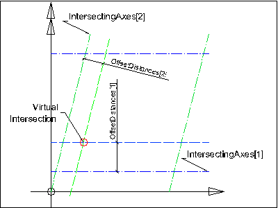
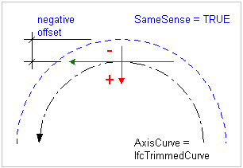

Definition from IAI: The virtual grid intersection (IfcVirtualGridIntersection) defines the derived location of the intersection between two grid axes. Offset values may be given to set an offset distance to the grid axis for the calculation of the virtual grid intersection.
The two intersecting axes (IntersectingAxes) define the intersection point, which exact location (in terms of the Cartesian point representing the intersection) has to be calculated from the geometric representation of the two participating curves.
Offset values may be given (OffsetDistances). If given, the position within the list of OffsetDistances corresponds with the position within the list of IntersectingAxes. Therefore:
- OffsetDistances[1] sets the offset to IntersectingAxes[1],
- OffsetDistances[2] sets the offset to IntersectingAxes[2], and
- OffsetDistances[3] sets the offset to the virtual intersection in direction of the orientation of the cross product of IntersectingAxes[1] and the orthogonal complement of the IntersectingAxes[1] (which is the positive or negative direction of the z axis of the design grid position).
Illustration
 |
Two offset distances given, the virtual intersection is defined in the xy plane of the grid axis placement. |
 |
Three offset distances given, the virtual intersection is defined by an offset (in direction of the z-axis of the design grid placement) to the virtual intersection in the xy plane of the grid axis placement. |
The distance of the offset curve (OffsetDistances[n]) is measured from the basis curve. The distance may be positive, negative or zero. A positive value of distance defines an offset in the direction which is normal to the curve in the sense of an anti-clockwise rotation through 90 degrees from the tangent vector T at the given point. (This is in the direction of orthogonal complement(T).) This can be reverted by the SameSense attribute at IfcGridAxis which may switch the sense of the AxisCurve.
Illustration
 |
example of a negative offset
|
HISTORY: New entity in IFC Release 1.5. The definition has changed after version 2x beta 2.
ISSUES: See issue log for changes made in IFC Release 2x. The entity name was changed from IfcConstraintRelIntersection.